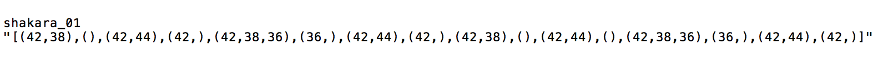

This project was always, in one way or another, about how we engage with the technology we use in creative endeavours. Do the endless digital tools at our disposal augment or hinder our creative capacities? This is what I hoped to explore in the context of machine learning.
Initially, my project was going to focus audio and MIDI sample libraries, and their power to instantly create and generate in certain styles and genres. I find this idea quite problematic, because really, it places us into a creatively inhibited relationship with technology. On top of that, what results is a large body of homogenous and undifferentiated musical output.
You can read more about my initial ideas here.
Initially, I planned to train a recurrent neural net model (Magenta's Drums-RNN), long short-term memory RNN, on my own set of MIDI data. This proved to be difficult for many reasons. When I had finally managed to get this working, and tried training on my own data, the results were far from interesting. The model in fact generated the exact same rhythmic output each time.
I then shifted gears a little bit, and instead of trying to train my own model, I focused on how to engage with Drums-RNN's pre-trained model. My initial idea had been to train a model on a corpus of electronic dance music rhythmic MIDI data, and then see how to inject mutations and customizations into the output, but training my own dataset wasn't really necessary, as the existing one worked quite well.
So instead I used very specific priming drum tracks in order to influence the kinds of rhythms that the model would generate. I transcribed drum notation that I found online into the format that the model understands, and then generated MIDI drum tracks (on a general Drum GM instrument) for different primers and output lengths.
Shakara notation from here.
Transcription to primer notation.

This project was always, in one way or another, about how we engage with the technology we use in creative endeavours. Do the endless digital tools at our disposal augment or hinder our creative capacities? This is what I hoped to explore in the context of machine learning.
Initially, my project was going to focus audio and MIDI sample libraries, and their power to instantly create and generate in certain styles and genres. I find this idea quite problematic, because really, it places us into a creatively inhibited relationship with technology. On top of that, what results is a large body of homogenous and undifferentiated musical output.
You can read more about my initial ideas here.
Initially, I planned to train a recurrent neural net model (Magenta's Drums-RNN), long short-term memory RNN, on my own set of MIDI data. This proved to be difficult for many reasons. When I had finally managed to get this working, and tried training on my own data, the results were far from interesting. The model in fact generated the exact same rhythmic output each time.
I then shifted gears a little bit, and instead of trying to train my own model, I focused on how to engage with Drums-RNN's pre-trained model. My initial idea had been to train a model on a corpus of electronic dance music rhythmic MIDI data, and then see how to inject mutations and customizations into the output, but training my own dataset wasn't really necessary, as the existing one worked quite well.
So instead I used very specific priming drum tracks in order to influence the kinds of rhythms that the model would generate. I transcribed drum notation that I found online into the format that the model understands, and then generated MIDI drum tracks (on a general Drum GM instrument) for different primers and output lengths.
Shakara notation from here.
Transcription to primer notation.
The eureka moment arrived, as I listened to the outputs that the model generated. It was incredible to hear the DNA of those primer tracks, sometimes clearly, at other times warped and mutated. Although there were so many outputs already, all I could see was more possibility. This material was certainly interesting, and diverse, but it needed attention.
This is where I saw that this would need to be a collaboration. The machine learning algorithm provided a lot of very interesting material and inspiration. But as interesting as that material was, it was only a starting point. It was up to me to take this material, transform it, and create something more meaningful out of it. And this requirement was what made the process so engaging in my opinion. It was so far off from the idea of pushing a button and the computer giving a polished, finished output.
Let me talk a bit about the music itself. I mentioned the primer drum tracks earlier. Although the model was trained on a non-genred set of data, the use of primers of a specific style influenced the rhythms it generated. I turned to Fela Kuti and Tony Allen, wanting at this point to step away from regular, 4/4 dominated rhythm that dominates club and dance music, (and also simply because I just really dig their music). I transcribed a bunch of afro-beat drum grooves into the format required by Drums-RNN, as well as some other rhythmic blueprints for a bit of deviation and diversity.
Once the rhythms were generated, I listened to them and made rough sketches in Logic, cutting, splicing and recombining the MIDI data. Importantly, I sometimes left the rhythms as they were, because again, it was about me and the machine. Some of its outputs were really incredible and interesting, and so I left them as is.
I translated (changed the MIDI notes) the rhythms to work as a djembe VST rather than a standard kit. The sound palette is inspired by my experience with African marimba, and a love of electronic textures. I must mention the outstanding Nihiloxica which inspired the energy and hybridity of this tape.
The final result is a 4 track tape. The tracks (RHYTHM_01 through _04), appear in the order they were created. Side A contains more raw rhythmic material from the neural net, while Side B is more explorative, reducing the material to smaller chunks, and introducing more elements apart from the djembe, such as synths, marimba and balafon. The idea is that the arc of the tracks traces my arc of dealing with these generated rhythms, presenting both their innate qualities, and their potential as source material.
I recorded the tracks to tape, because I'm a sucker for physical media. I would press it to vinyl for the larger-format artwork but that wasn't possible. I am curious how the sound quality degrades over time on my cheap tapes, and how that impacts the listening experience.